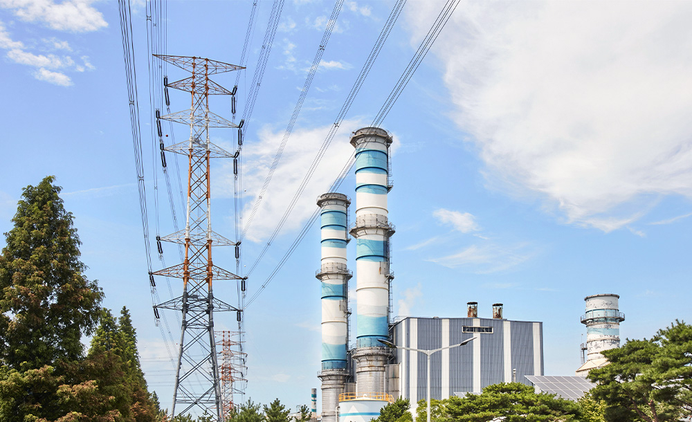
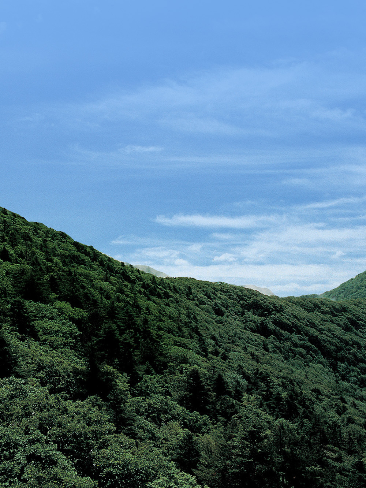
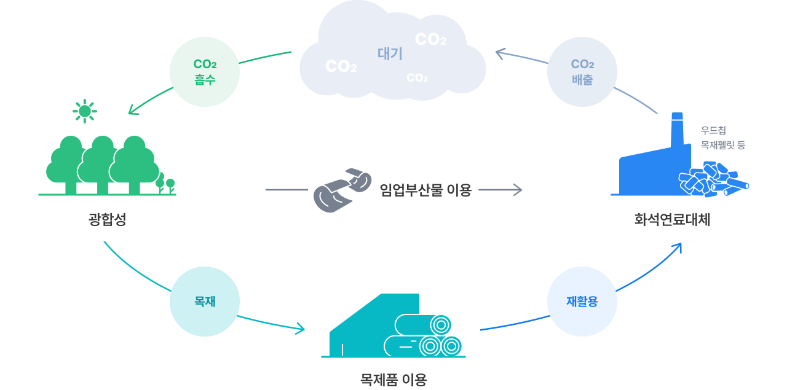
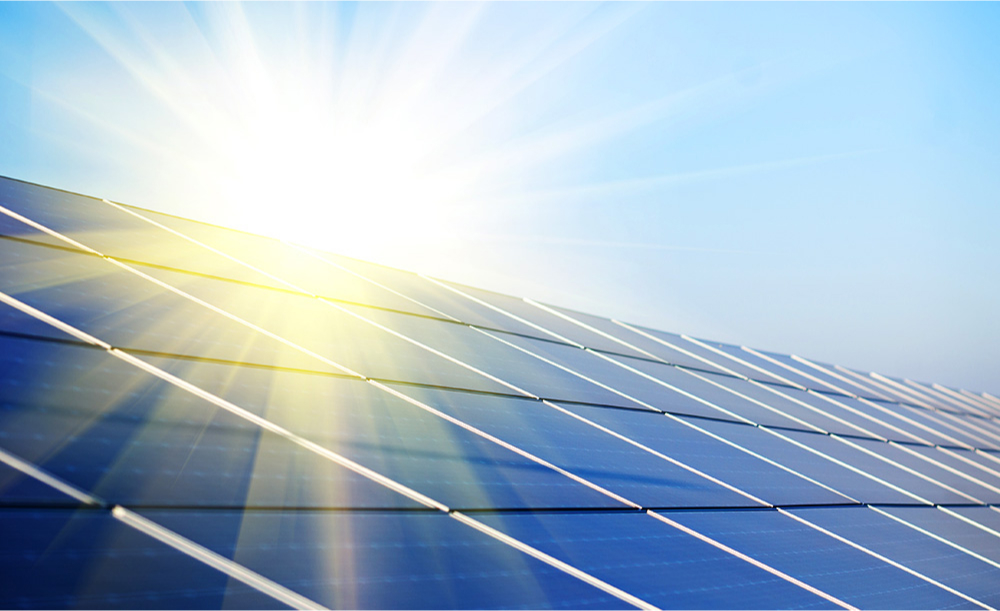
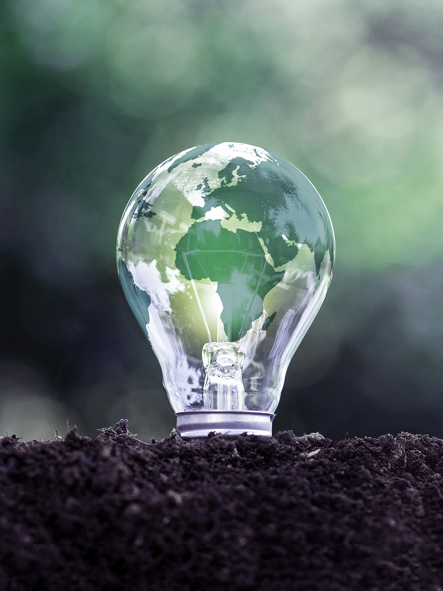

천연가스인 LNG는 석탄과 석유보다 대기오염 물질과 탄소 배출량이 적은 친환경 연료입니다. GS EPS는 LNG를 연료로 활용하여 친환경·저탄소 에너지를 생산함으로써 미래 환경을 더 깨끗하게 만들고 있습니다.
바이오매스는 자원을 보다 효율적으로 활용하여 지구온난화에 미치는 영향을 감소시킬 수 있는 친환경 에너지원입니다. 연료 사용 과정에서 발생하는 이산화탄소가 식물의 광합성으로 흡수되고 새로운 바이오매스로 환원되어 탄소순환이 이루어지기 때문입니다. GS EPS는 바이오매스를 연료로 활용하는 친환경 발전을 통해 탄소중립에 기여하며 지속 가능한 청정 에너지를 만들고 있습니다.
재생 가능한 에너지원인 태양광을 이용하는 발전은 온실가스 배출량을 감소시켜 기후변화에 미치는 영향을 완화합니다. GS EPS는 태양광 발전으로 자연 생태계를 보호하며 지속 가능한 에너지를 생산하고 있습니다.




